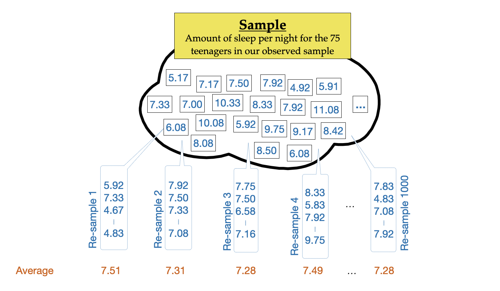
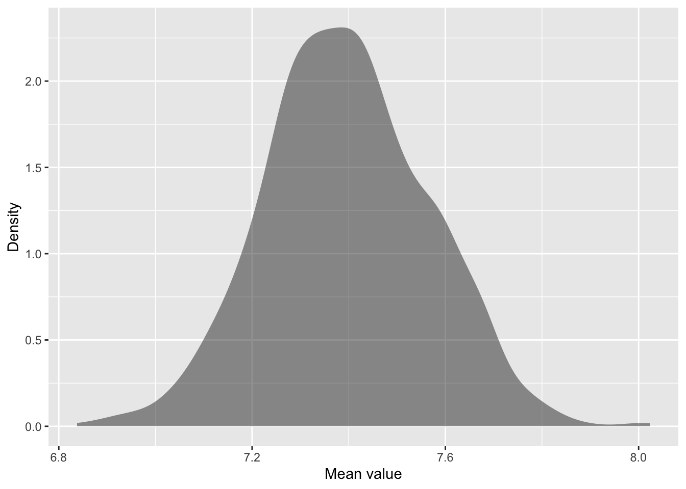

8 Bootstrapping: Using Simulation to Estimate the Uncertainty
In this chapter you will learn how to estimate the standard error of the mean from a single sample. To do this, you will employ a simulation method called bootstrapping.
8.1 Bootstrapping
The key question addressed by using any statistical method of inference is “how much variation is expected in a particular test statistic if one repeatedly draws random samples from the same population?” In the thought experiment we introduced in Chapter 7, the method for quantifying the uncertainty was to repeatedly sample from the population and measure the variation in the sample means. Recall that the quantification of the uncertainty (i.e., variation in the sample means) is referred to as the standard error.
Bradley Efron introduced the methodology of bootstrapping in the late 1970s as an alternative method to compute the standard error.1
Efron’s big discovery was that in the thought experiment, we could replace the population with a sample, and then randomly sample from that initial sample. He proved that using this methodology, you can obtain a good estimate of the sampling variation.

Because we need to randomly sample 75 observations out of the original sample (which itself only includes 75 observations), we need to sample WITH REPLACEMENT when we draw our re-samples. In this way, we mimic drawing random samples from a larger population without actually needing the larger population.
8.2 Importing the Teen Sleep Data
We will use the data in teen-sleep.csv to bootstrap a standard error of the mean. These data include the bedtime, wake-up time, and hours slept for a sample of American teens in Grades 9–12.
We will prepare for the analysis by loading in the {tidyverse}, {ggformula}, and {mosaicCore} libraries and importing the teen sleep data. We will also load the {mosiaic} package.
# Load libraries
library(ggformula)
library(mosaicCore)
library(mosaic)
library(tidyverse)
# Import data
teen_sleep <- read_csv("https://raw.githubusercontent.com/zief0002/epsy-5261/main/data/teen-sleep.csv")
# View data
teen_sleep# A tibble: 75 × 3
bedtime wakeup hrs_sleep
<chr> <chr> <dbl>
1 22:15:00 5:25:00 7.17
2 22:5:00 5:50:00 7.75
3 22:15:00 5:45:00 7.5
4 20:0:00 6:20:00 10.3
5 23:45:00 5:50:00 6.08
6 22:5:00 6:0:00 7.92
7 0:25:00 5:20:00 4.92
8 21:10:00 6:15:00 9.08
9 21:20:00 5:15:00 7.92
10 21:10:00 5:30:00 8.33
# ℹ 65 more rows8.3 Bootstrapping from the Teen Sleep Data
The process for computing the standard error via bootstrapping is:
- STEP 1: Randomly sample n observations from the observed sample of size n (with replacement) This is called a bootstrap sample or a re-sample.
- STEP 2: Compute the mean of the bootstrap sample.
- STEP 3: Repeat the first two steps in the process many times (say 1000 times), each time recording the mean.
- STEP 4: Find the standard deviation of these means (i.e., the standard error of the mean).
The computations we do will parallel each step of this process. As you learn how to do this, it is easy to get lost in the computing and forget why you are doing this. Remember, the end goal is to mimic the thought experiment so we can quantify the variation in the sample means.
8.3.1 STEP 1: Randomly sample 75 observations from the observed sample of size 75 teen sleep amounts (with replacement)
To randomly sample from a set of values we use the sample() function. We will need to specify the values we are sampling from (i.e., the original sample) as an input to the function. The data we want to randomly sample from is in a column called hrs_sleep inside the data object called teen_sleep. To specify a particular column in a data object we use the following notation: teen_sleep$hrs_sleep. We also need to set the number of observations to randomly sample, and tell this function that we are sampling with replacement.
Thus to draw a random sample of values from our data we use:
# Randomly sample from the hrs_sleep column located in the teen_sleep data object
# Draw 75 observations
# Sample with replacement
sample(teen_sleep$hrs_sleep, size = 75, replace = TRUE) [1] 6.333333 6.416667 10.333333 5.166667 5.916667 7.750000 5.833333
[8] 7.916667 7.916667 6.500000 5.416667 6.083333 8.333333 8.583333
[15] 4.500000 7.333333 7.333333 7.750000 6.333333 5.916667 4.666667
[22] 6.916667 7.916667 7.916667 6.083333 4.583333 7.333333 7.916667
[29] 7.583333 7.583333 7.666667 7.333333 7.750000 9.916667 7.583333
[36] 6.083333 8.583333 7.583333 10.333333 4.583333 7.916667 7.416667
[43] 7.583333 8.333333 11.083333 7.750000 7.000000 6.916667 8.750000
[50] 8.333333 6.833333 8.083333 5.833333 5.416667 8.583333 6.583333
[57] 7.666667 10.083333 7.750000 6.500000 7.500000 7.083333 8.583333
[64] 7.333333 5.416667 8.333333 6.750000 7.083333 9.083333 10.083333
[71] 8.416667 8.333333 8.750000 7.083333 7.583333This is akin to drawing a bootstrap sample from the original sample. Note that because we are drawing randomly, if you are trying this on your computer, you might get a different bootstrap sample than the one shown here. If you re-run this syntax, you will get a different bootstrap sample.
# Draw a second bootstrap sample of 75 observations
sample(teen_sleep$hrs_sleep, size = 75, replace = TRUE) [1] 6.500000 4.666667 4.583333 10.083333 4.666667 7.583333 9.916667
[8] 8.333333 4.500000 7.583333 8.333333 11.083333 10.083333 7.750000
[15] 5.166667 4.416667 7.916667 6.666667 7.083333 7.500000 4.666667
[22] 6.666667 7.916667 5.166667 4.833333 7.750000 7.916667 4.666667
[29] 8.500000 6.500000 8.333333 7.500000 7.583333 5.916667 4.916667
[36] 6.083333 6.833333 8.083333 8.333333 9.916667 8.500000 6.083333
[43] 4.916667 8.083333 7.500000 10.333333 5.916667 4.583333 7.583333
[50] 4.583333 7.583333 8.833333 5.416667 7.500000 7.000000 4.916667
[57] 4.583333 6.750000 7.916667 9.166667 6.083333 7.583333 8.333333
[64] 7.583333 6.083333 7.916667 8.583333 7.500000 5.916667 4.166667
[71] 7.083333 7.083333 7.583333 4.833333 4.5000008.3.2 STEP 2: Compute the mean of the bootstrap sample.
To compute the mean of a bootstrap sample, we are just going to embed our sample() syntax inside of the mean() function. For example,
# Draw a bootstrap sample of 75 observations and compute the mean
mean(sample(teen_sleep$hrs_sleep, size = 75, replace = TRUE))[1] 7.584444You could re-run this syntax to draw another bootstrap sample and compute the mean.
8.3.3 STEP 3: Repeat the first two steps in the process many times (say 1000 times), each time recording the mean.
To repeat a set of computations, we are going to use the do() function from the {mosaic} package. As a reminder, you will need the {mosiac} package loaded prior to using this function. The syntax for the do() function takes the following format:
do(N times) * {Computations to repeat}As an example, if we wanted to carry out our computations to draw a bootstrap sample and compute the mean 10 times, the synatx is:
# Draw a bootstrap sample of 75 observations and compute the mean
# Do this 10 times
do(10) * {mean(sample(teen_sleep$hrs_sleep, size = 75, replace = TRUE))} result
1 7.696667
2 7.381111
3 7.420000
4 7.111111
5 7.134444
6 7.202222
7 7.223333
8 7.530000
9 7.433333
10 6.968889The computations are carried out 10 times and the results are recorded in a column (result) of a data object. Because we will ultimately want to compute on this data object, when we run this, we will want to assign the data into an object. Below, we draw 1000 bootstrap samples, each time computing the mean, and assign them into a data object called bootstrap_means.
# Draw a bootstrap sample of 75 observations and compute the mean
# Do this 1000 times
# Assign these into an object called bootstrap_means
bootstrap_means <- do(1000) * {mean(sample(teen_sleep$hrs_sleep, size = 75, replace = TRUE))}
# View the results
bootstrap_means result
1 7.557778
2 7.594444
3 7.327778
4 7.336667
5 7.498889
6 7.485556
7 7.294444
8 7.408889
9 7.262222
10 7.303333
11 7.273333
12 7.295556
13 7.112222
14 7.757778
15 7.655556
16 7.754444
17 7.266667
18 7.151111
19 7.428889
20 7.274444
21 7.415556
22 7.566667
23 7.460000
24 7.461111
25 7.370000
26 7.593333
27 7.343333
28 7.674444
29 7.378889
30 7.393333
31 7.608889
32 7.441111
33 7.232222
34 7.252222
35 7.375556
36 7.524444
37 7.591111
38 7.418889
39 7.242222
40 7.348889
41 7.672222
42 7.215556
43 7.632222
44 7.420000
45 7.224444
46 7.163333
47 7.435556
48 7.476667
49 7.465556
50 7.401111
51 7.216667
52 7.470000
53 7.467778
54 7.312222
55 7.460000
56 7.196667
57 7.685556
58 7.363333
59 7.583333
60 7.425556
61 7.228889
62 7.455556
63 7.466667
64 7.336667
65 7.432222
66 7.563333
67 7.260000
68 7.264444
69 7.575556
70 7.207778
71 7.532222
72 7.431111
73 7.607778
74 7.373333
75 7.381111
76 7.386667
77 7.313333
78 7.276667
79 7.771111
80 7.297778
81 7.398889
82 7.513333
83 7.552222
84 7.432222
85 7.335556
86 7.678889
87 7.557778
88 7.321111
89 7.496667
90 7.446667
91 7.452222
92 7.458889
93 7.227778
94 7.372222
95 7.227778
96 7.466667
97 7.177778
98 7.346667
99 7.617778
100 7.250000
101 7.390000
102 7.335556
103 7.373333
104 7.476667
105 7.490000
106 7.484444
107 7.566667
108 7.310000
109 6.946667
110 7.581111
111 7.666667
112 7.295556
113 7.593333
114 7.362222
115 7.285556
116 7.553333
117 7.295556
118 7.446667
119 7.313333
120 7.168889
121 7.397778
122 7.526667
123 7.332222
124 7.283333
125 7.281111
126 7.281111
127 7.388889
128 7.348889
129 7.264444
130 7.274444
131 7.486667
132 7.217778
133 7.146667
134 7.620000
135 7.302222
136 7.246667
137 7.487778
138 7.273333
139 7.411111
140 7.316667
141 7.537778
142 7.052222
143 7.584444
144 7.424444
145 7.317778
146 7.502222
147 7.381111
148 7.102222
149 7.110000
150 7.561111
151 7.312222
152 7.334444
153 7.404444
154 7.301111
155 7.391111
156 7.313333
157 7.292222
158 7.295556
159 7.415556
160 7.454444
161 7.228889
162 7.166667
163 7.258889
164 7.566667
165 7.472222
166 7.240000
167 7.412222
168 7.113333
169 7.277778
170 7.323333
171 6.924444
172 7.207778
173 7.352222
174 7.217778
175 7.330000
176 7.270000
177 7.354444
178 7.501111
179 7.398889
180 7.497778
181 7.036667
182 7.183333
183 8.023333
184 7.281111
185 7.515556
186 7.666667
187 7.401111
188 7.688889
189 7.468889
190 7.400000
191 7.597778
192 7.256667
193 7.433333
194 7.517778
195 7.336667
196 7.532222
197 7.262222
198 7.450000
199 7.212222
200 7.363333
201 7.398889
202 7.287778
203 7.430000
204 7.420000
205 7.578889
206 7.496667
207 7.178889
208 7.514444
209 7.697778
210 7.028889
211 7.508889
212 7.657778
213 7.368889
214 7.403333
215 7.612222
216 6.944444
217 7.308889
218 7.104444
219 7.300000
220 7.201111
221 7.342222
222 7.578889
223 7.627778
224 7.110000
225 7.480000
226 7.185556
227 7.512222
228 7.710000
229 7.714444
230 7.692222
231 7.280000
232 7.678889
233 7.494444
234 7.507778
235 7.340000
236 7.147778
237 6.988889
238 7.293333
239 7.526667
240 7.433333
241 7.355556
242 7.816667
243 7.197778
244 7.511111
245 7.506667
246 7.197778
247 7.577778
248 7.504444
249 7.355556
250 7.553333
251 7.363333
252 7.580000
253 7.383333
254 7.561111
255 7.425556
256 7.660000
257 7.393333
258 7.461111
259 7.320000
260 7.381111
261 7.451111
262 7.215556
263 7.010000
264 7.604444
265 7.647778
266 7.350000
267 7.566667
268 7.535556
269 7.701111
270 7.337778
271 7.200000
272 7.640000
273 7.117778
274 7.292222
275 7.513333
276 7.144444
277 7.410000
278 7.361111
279 7.311111
280 7.291111
281 7.414444
282 7.457778
283 7.401111
284 7.674444
285 7.495556
286 7.223333
287 7.250000
288 7.311111
289 7.472222
290 7.337778
291 7.462222
292 7.333333
293 7.547778
294 7.423333
295 7.595556
296 7.347778
297 7.662222
298 7.213333
299 7.434444
300 7.593333
301 7.580000
302 7.471111
303 7.120000
304 7.387778
305 7.446667
306 7.351111
307 7.392222
308 7.290000
309 7.536667
310 7.408889
311 7.542222
312 7.518889
313 7.356667
314 7.487778
315 7.598889
316 7.463333
317 7.464444
318 7.428889
319 7.294444
320 7.656667
321 7.630000
322 7.426667
323 7.335556
324 7.557778
325 7.464444
326 7.636667
327 7.477778
328 7.557778
329 7.584444
330 7.451111
331 7.205556
332 7.593333
333 7.357778
334 7.073333
335 7.475556
336 7.498889
337 7.291111
338 7.277778
339 7.315556
340 7.423333
341 7.406667
342 7.265556
343 7.330000
344 7.562222
345 7.273333
346 7.290000
347 7.306667
348 7.353333
349 7.261111
350 7.350000
351 7.303333
352 7.556667
353 7.218889
354 7.350000
355 7.280000
356 7.513333
357 7.622222
358 7.291111
359 7.478889
360 7.156667
361 7.515556
362 7.397778
363 7.290000
364 7.273333
365 7.032222
366 7.443333
367 7.528889
368 7.658889
369 7.473333
370 7.444444
371 7.677778
372 7.253333
373 7.420000
374 7.597778
375 7.102222
376 7.363333
377 7.534444
378 7.644444
379 7.716667
380 7.264444
381 6.886667
382 7.401111
383 7.446667
384 7.385556
385 7.451111
386 7.351111
387 7.578889
388 7.252222
389 7.131111
390 7.040000
391 7.605556
392 7.455556
393 7.296667
394 7.822222
395 7.277778
396 7.280000
397 7.087778
398 7.254444
399 7.273333
400 7.167778
401 7.263333
402 7.600000
403 7.401111
404 7.604444
405 7.403333
406 7.198889
407 7.275556
408 7.460000
409 7.347778
410 7.310000
411 7.383333
412 7.162222
413 7.441111
414 7.400000
415 7.532222
416 7.138889
417 7.158889
418 7.342222
419 7.313333
420 7.380000
421 7.187778
422 7.455556
423 7.381111
424 7.443333
425 7.320000
426 7.756667
427 7.255556
428 7.334444
429 7.666667
430 7.390000
431 7.582222
432 7.048889
433 7.247778
434 7.805556
435 7.072222
436 7.097778
437 7.605556
438 7.335556
439 7.345556
440 7.213333
441 7.507778
442 7.652222
443 7.372222
444 7.351111
445 7.258889
446 7.340000
447 7.500000
448 7.574444
449 7.254444
450 7.134444
451 7.410000
452 7.047778
453 7.438889
454 7.201111
455 7.505556
456 7.291111
457 7.661111
458 7.596667
459 7.331111
460 7.200000
461 7.303333
462 7.656667
463 7.416667
464 7.553333
465 7.346667
466 7.466667
467 7.402222
468 7.602222
469 7.688889
470 7.668889
471 7.467778
472 7.350000
473 7.421111
474 7.444444
475 7.406667
476 7.517778
477 7.372222
478 7.691111
479 7.397778
480 7.458889
481 7.723333
482 7.265556
483 7.116667
484 7.402222
485 7.396667
486 7.304444
487 7.384444
488 7.386667
489 7.404444
490 7.234444
491 7.514444
492 7.664444
493 7.231111
494 7.660000
495 7.490000
496 7.242222
497 7.576667
498 7.440000
499 7.200000
500 7.426667
501 7.566667
502 7.112222
503 7.588889
504 7.450000
505 7.571111
506 7.123333
507 7.111111
508 7.755556
509 7.398889
510 7.402222
511 7.286667
512 7.182222
513 7.092222
514 7.294444
515 7.354444
516 7.260000
517 6.977778
518 7.362222
519 7.267778
520 7.465556
521 7.380000
522 7.355556
523 7.562222
524 7.294444
525 7.194444
526 7.536667
527 7.355556
528 7.318889
529 7.418889
530 7.454444
531 7.701111
532 7.544444
533 7.663333
534 7.316667
535 7.307778
536 7.510000
537 7.360000
538 7.315556
539 7.415556
540 7.287778
541 7.207778
542 7.441111
543 7.833333
544 7.657778
545 7.292222
546 7.418889
547 7.328889
548 7.656667
549 7.605556
550 7.307778
551 7.673333
552 7.793333
553 7.421111
554 7.298889
555 7.564444
556 7.424444
557 7.328889
558 7.495556
559 7.331111
560 7.373333
561 7.657778
562 7.254444
563 7.580000
564 7.540000
565 7.510000
566 7.317778
567 7.526667
568 7.477778
569 7.535556
570 7.067778
571 7.555556
572 7.290000
573 7.432222
574 7.482222
575 7.205556
576 7.221111
577 7.080000
578 7.447778
579 7.397778
580 7.321111
581 7.215556
582 7.162222
583 7.547778
584 7.641111
585 7.531111
586 7.433333
587 7.446667
588 7.330000
589 7.451111
590 7.546667
591 7.571111
592 7.684444
593 7.228889
594 7.410000
595 7.728889
596 7.661111
597 7.603333
598 7.018889
599 7.144444
600 7.263333
601 7.376667
602 7.367778
603 7.333333
604 7.120000
605 7.416667
606 7.524444
607 7.432222
608 7.436667
609 7.218889
610 7.242222
611 7.251111
612 7.685556
613 7.410000
614 7.417778
615 7.886667
616 7.990000
617 7.532222
618 7.431111
619 7.368889
620 7.246667
621 7.548889
622 7.482222
623 7.496667
624 7.303333
625 7.480000
626 7.192222
627 7.297778
628 7.195556
629 7.693333
630 7.496667
631 7.363333
632 7.211111
633 7.603333
634 7.546667
635 7.247778
636 7.607778
637 7.175556
638 7.615556
639 7.265556
640 7.307778
641 7.484444
642 7.240000
643 7.335556
644 7.091111
645 7.388889
646 7.426667
647 7.664444
648 7.485556
649 7.578889
650 7.204444
651 7.300000
652 7.272222
653 7.242222
654 7.687778
655 7.400000
656 7.392222
657 7.452222
658 7.266667
659 6.938889
660 7.338889
661 7.763333
662 7.441111
663 7.456667
664 7.351111
665 7.487778
666 7.292222
667 7.038889
668 7.590000
669 7.720000
670 7.225556
671 7.324444
672 7.358889
673 7.414444
674 7.206667
675 7.263333
676 7.538889
677 7.496667
678 7.443333
679 7.296667
680 7.361111
681 7.594444
682 7.460000
683 7.153333
684 7.295556
685 7.104444
686 7.604444
687 7.697778
688 7.204444
689 7.276667
690 7.371111
691 7.163333
692 7.351111
693 7.262222
694 7.402222
695 7.444444
696 7.004444
697 7.331111
698 7.481111
699 7.060000
700 7.501111
701 7.285556
702 7.272222
703 7.348889
704 7.251111
705 6.981111
706 7.137778
707 7.484444
708 7.156667
709 7.286667
710 7.341111
711 7.412222
712 7.457778
713 7.396667
714 7.473333
715 7.431111
716 7.497778
717 7.271111
718 7.387778
719 7.515556
720 7.398889
721 7.403333
722 7.353333
723 7.420000
724 7.414444
725 7.520000
726 7.278889
727 7.280000
728 7.444444
729 7.472222
730 7.350000
731 7.597778
732 7.200000
733 7.597778
734 7.303333
735 7.667778
736 7.180000
737 7.342222
738 7.304444
739 7.386667
740 7.182222
741 7.241111
742 7.161111
743 7.753333
744 7.450000
745 7.406667
746 7.347778
747 7.210000
748 7.522222
749 7.332222
750 7.377778
751 7.333333
752 7.274444
753 7.388889
754 7.475556
755 7.352222
756 7.497778
757 7.405556
758 7.615556
759 7.272222
760 7.225556
761 7.418889
762 7.392222
763 7.328889
764 7.252222
765 7.597778
766 7.288889
767 7.444444
768 7.462222
769 7.272222
770 7.325556
771 7.691111
772 7.347778
773 7.364444
774 7.433333
775 7.394444
776 7.774444
777 7.598889
778 7.390000
779 7.354444
780 7.276667
781 7.370000
782 7.271111
783 7.458889
784 7.583333
785 7.124444
786 7.532222
787 7.453333
788 7.163333
789 7.728889
790 7.552222
791 7.108889
792 7.575556
793 7.311111
794 7.497778
795 7.252222
796 7.437778
797 7.373333
798 7.533333
799 7.418889
800 7.647778
801 7.257778
802 7.131111
803 7.617778
804 7.045556
805 7.183333
806 7.556667
807 7.707778
808 7.628889
809 7.171111
810 7.512222
811 7.180000
812 7.433333
813 7.360000
814 7.268889
815 7.344444
816 7.317778
817 7.673333
818 7.412222
819 7.451111
820 7.570000
821 7.261111
822 7.286667
823 7.500000
824 7.358889
825 7.357778
826 7.335556
827 7.224444
828 7.151111
829 7.095556
830 7.440000
831 7.470000
832 7.546667
833 7.523333
834 7.256667
835 7.655556
836 7.556667
837 7.477778
838 7.422222
839 7.187778
840 7.344444
841 7.098889
842 7.370000
843 7.367778
844 7.515556
845 7.370000
846 7.560000
847 7.315556
848 7.256667
849 7.654444
850 7.134444
851 7.150000
852 7.311111
853 7.311111
854 7.233333
855 7.605556
856 7.602222
857 7.384444
858 7.200000
859 7.643333
860 7.521111
861 7.530000
862 7.252222
863 7.488889
864 7.624444
865 7.322222
866 7.613333
867 7.522222
868 7.346667
869 7.145556
870 7.572222
871 7.247778
872 7.575556
873 7.505556
874 7.347778
875 7.604444
876 7.622222
877 7.310000
878 7.080000
879 7.611111
880 7.368889
881 7.674444
882 7.113333
883 7.610000
884 7.715556
885 7.633333
886 7.188889
887 7.302222
888 7.266667
889 7.267778
890 7.343333
891 7.328889
892 7.466667
893 7.425556
894 7.503333
895 7.203333
896 7.405556
897 7.072222
898 7.302222
899 7.143333
900 7.533333
901 7.346667
902 7.437778
903 7.162222
904 7.074444
905 7.160000
906 7.206667
907 7.472222
908 7.352222
909 7.594444
910 7.254444
911 7.685556
912 7.223333
913 7.455556
914 7.778889
915 7.364444
916 7.414444
917 7.322222
918 7.386667
919 7.417778
920 6.903333
921 7.535556
922 7.568889
923 7.138889
924 7.312222
925 7.382222
926 7.326667
927 7.422222
928 7.732222
929 7.272222
930 7.380000
931 7.348889
932 7.841111
933 7.337778
934 7.434444
935 7.670000
936 7.234444
937 7.226667
938 7.338889
939 7.616667
940 7.231111
941 7.424444
942 6.837778
943 7.417778
944 7.266667
945 7.256667
946 7.403333
947 7.606667
948 7.505556
949 7.403333
950 7.787778
951 7.278889
952 7.213333
953 7.407778
954 7.418889
955 7.597778
956 7.195556
957 7.160000
958 7.572222
959 7.480000
960 7.146667
961 7.443333
962 7.275556
963 7.451111
964 7.188889
965 7.493333
966 7.455556
967 7.203333
968 7.667778
969 7.377778
970 7.264444
971 7.613333
972 7.438889
973 7.516667
974 7.187778
975 7.395556
976 7.341111
977 7.241111
978 7.352222
979 7.401111
980 7.770000
981 7.281111
982 7.271111
983 7.332222
984 7.351111
985 7.291111
986 7.414444
987 7.327778
988 7.508889
989 7.311111
990 7.366667
991 7.414444
992 7.534444
993 7.180000
994 7.427778
995 7.237778
996 7.474444
997 7.262222
998 7.382222
999 7.441111
1000 7.6244448.3.4 STEP 4: Find the standard deviation of these means (i.e., the standard error of the mean).
Remember our goal was to compute the standard error, which quantifies the uncertainty in the sample mean estimates that is due to sampling variation. Before we do that, we will visualize the distribution of bootstrapped means.
# Create a density plot of the bootstrapped means
gf_density(
~result, data = bootstrap_means,
xlab = "Mean value",
ylab = "Density"
)
The distribution of bootstrapped means is unimodal and symmetric. This indicates that the standard deviation is a reasonable numeric summary of the variation. Again, since the cases in the distribution are means (summary measures), the standard deviation is referred to as a standard error. To compute the standard error, we use df_stats():
# Compute SE
df_stats(~result, data = bootstrap_means) response min Q1 median Q3 max mean sd n
1 result 6.837778 7.278889 7.391667 7.509167 8.023333 7.395381 0.1699168 1000
missing
1 0Here the standard error (found in the sd column) is 0.17.
PROTIP
The distribution of bootstrapped means should be centered at the value of the original sample mean. In our teen sleep example, the original sample had a mean of 7.4. This value is roughly at the center of the distribution in Figure 8.3. This can be a self-check when you create a bootstrap distribution.
8.4 References
Raspe, R. E. (1948). Singular travels, campaigns and adventures of Baron Munchausen (J. Carswell, Ed.). Cresset Press.
The nomenclature of bootstrapping comes from the idea that the use of the observed data to generate more data is akin to a method used by Baron Munchausen, a literary character, after falling “in a hole nine fathoms under the grass,…observed that I had on a pair of boots with exceptionally sturdy straps. Grasping them firmly, I pulled with all my might. Soon I had hoist myself to the top and stepped out on terra firma without further ado” (Raspe, 1948, p. 22)↩︎